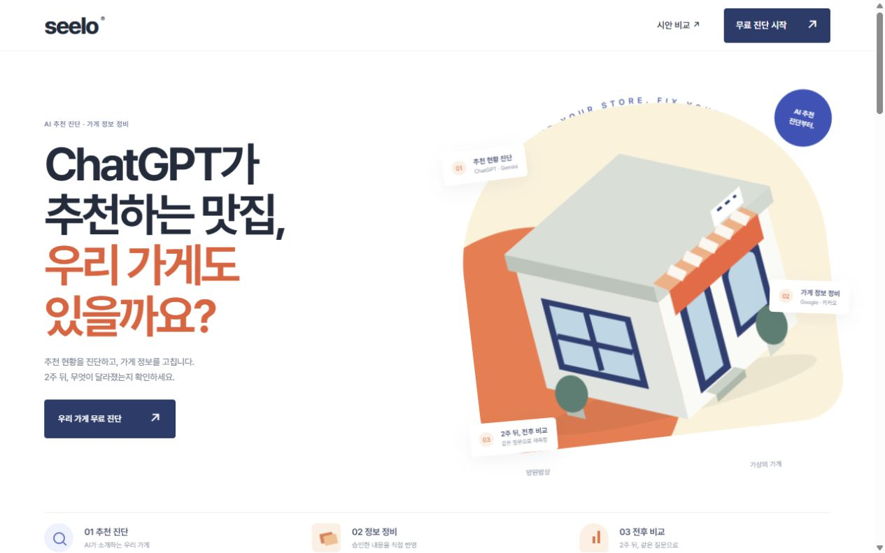
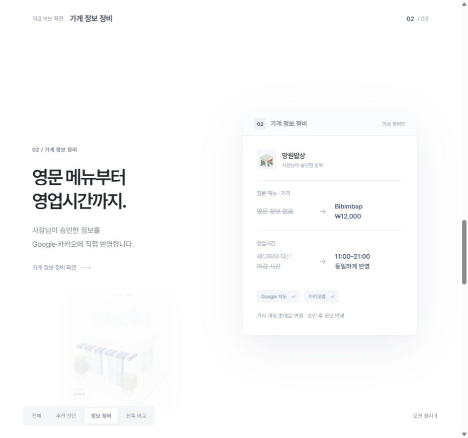

네 가지 랜딩 시안.
원하는 시안을 열어 스크롤하며 비교하세요.

NEW 01 / KINETIC TYPE
키네틱 타이포 ↗
선명한 코랄·블루, 더 커진 타이포와 확장되는 도형.

NEW 02 / CONNECTED WINDOWS
멀티 윈도 ↗
가게 주변의 창에서, 지금 필요한 화면 하나로.
원하는 시안을 열어 스크롤하며 비교하세요.

선명한 코랄·블루, 더 커진 타이포와 확장되는 도형.

가게 주변의 창에서, 지금 필요한 화면 하나로.